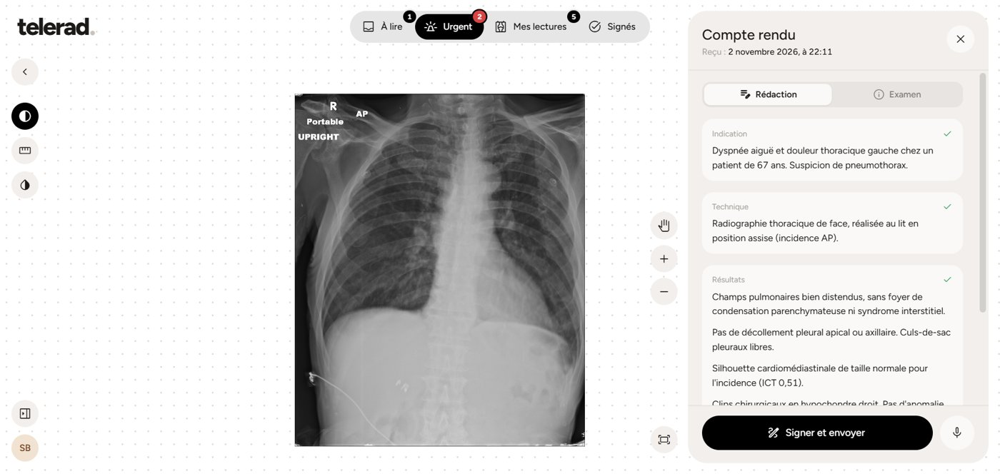
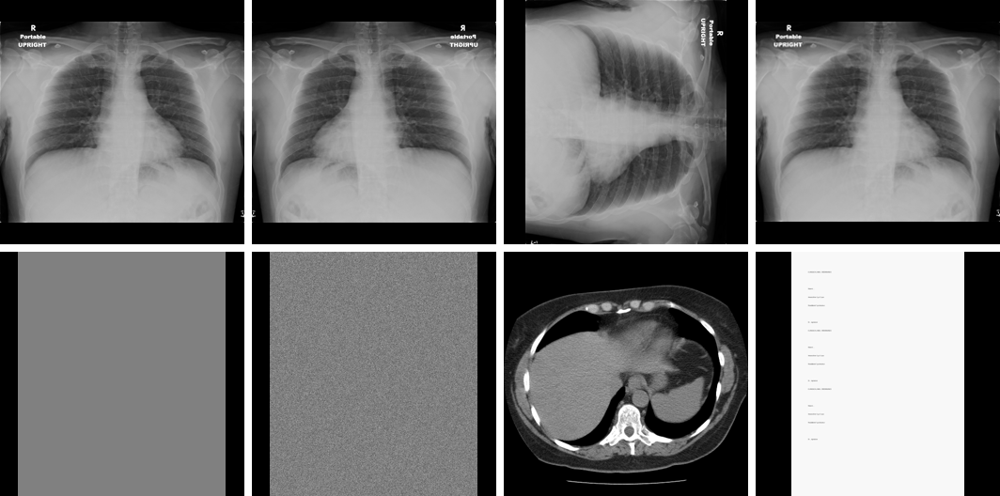

Technical report · November 2026
A Tool-Using Vision-Language Agent for Systematic Chest Radiograph Reading in a Low-Resource Teleradiology Workflow
Independent
MethodExperimentsLimitationsReferences
Abstract
Chest radiographs make up most of the volume in teleradiology, and most of it is read under time pressure, far from the clinic that took the image. We describe Telerad, a teleradiology system built to run on a single CPU-only laptop over a capped 4G link, and its reading agent: a general-purpose vision-language model that does not see the full-resolution film at once but has to work through it with tools. It must first identify what the image is and correct its orientation, then inspect nine anatomical zones with region crops at chosen contrast windows, record a finding for each zone, measure the cardiothoracic ratio and see its own measurement drawn back on the image, and only then output probabilities for the 14 CheXpert observations and a French report. A triple-reading mode runs three independent agents and an arbiter that keeps only concordant findings and labels single-reader findings as discordant. The radiologist reviews, edits and signs; nothing reaches the clinic without a signature. On a robustness suite of eight inputs built from one public radiograph (original, mirrored, rotated, downsampled, blank, noise, CT slice, document photo), the single-reader agent handled all eight as expected, corrected both orientation faults and declined to read the four non-radiographs, at a mean of 86 s and US$0.069 per chest film. Triple reading surfaced findings the single reader had called normal, but also failed our checklist-completeness check in two of four cases. We have not yet measured diagnostic accuracy: the protocol for a comparison against three board-certified radiologists on the 500-study CheXpert test set is implemented and described here, and its results will be reported separately.
Research prototype. Not a certified medical device and not for clinical use. All images are public, de-identified research data. Every AI output in the system is a draft that a radiologist must sign.
1. Introduction
Image classifiers for chest radiographs have reported radiologist-level performance on several findings for some years [1], [2]. In practice they arrive in a reading workflow as a list of scores with no account of how they were reached, and a radiologist has no cheap way to check a score other than reading the film again. The reading itself, meanwhile, is a procedure: radiologists are trained to go through the film zone by zone so that the obvious finding does not hide the second one.
General-purpose vision-language models can now call tools, look at an image, act, and look again [6]. This makes it possible to impose that procedure on the model instead of asking it for an answer in one pass. The model has to say what it is looking at, ask for a region, choose a contrast window, write down what it saw, and measure. Every one of those steps is an event that can be logged and replayed on top of the image in the radiologist's viewer, so the radiologist sees where the agent looked and what it concluded at each place.
We built this agent inside a complete teleradiology prototype aimed at a setting with few resources: clinics in Morocco sending images to a remote radiologist, a single laptop with no GPU as the server, and a mobile data budget of about 4 GB a day. This report describes the system, the agent, and the controls around it, and reports the first evaluation we have run, which tests behaviour and robustness rather than diagnostic accuracy.
Our contributions are:
- A reading agent that enforces a systematic nine-zone chest radiograph reading through tool constraints, with orientation correction, ruler-annotated crops, self-checked measurement and a local classifier available as a second opinion.
- A triple-reading mode with an arbiter that keeps concordant findings and reports single-reader findings as discordant instead of affirming or discarding them.
- A teleradiology pipeline around it (de-identification on upload, prioritised worklist, pre-sign consistency checks, audited signing and delivery) that runs natively on commodity CPU hardware.
- A robustness suite for reading agents and its results, and an implemented protocol for comparison with radiologists on the CheXpert test set.
2. System overview
The system has three processes we wrote (a React web client, a FastAPI service, a Python worker) and two we installed (PostgreSQL 16 and Orthanc [7] as the DICOM store). It runs natively on Windows on an Intel i7-8650U with 16 GB of RAM and no discrete GPU. There is no container runtime, message broker or cache.
2.1 Intake and de-identification
Studies are de-identified at upload, before anything is stored, by applying the tag list of the DICOM PS3.15 Basic Application Level Confidentiality Profile [8]: identifying attributes are removed or replaced, private tags are dropped, UIDs are remapped, and files declaring burned-in annotations are rejected. Patient sex and age are kept because they change the reading.
2.2 Pre-read and prioritisation
Each new exam enqueues a job in a PostgreSQL table that workers claim with FOR UPDATE SKIP LOCKED. For radiographs the worker runs the TorchXRayVision DenseNet (densenet121-res224-all) [3]; for CT it runs TotalSegmentator in its fast 3 mm mode [4], which takes about a minute per scan on CPU and produces a DICOM SEG overlay and organ volumes. Neither model was trained or fine-tuned by us. The clinic's free-text indication is classified by a language model as routine, urgent or critical, with a keyword fallback.
The urgency score is a set of plain rules so that every point on the worklist has a reason the radiologist can read:
score = 30·[flagged urgent] + 40·[critical indication] + 20·[urgent indication] + Σk wk·[pk ≥ 0.6], capped at 100,
with w = 40 for pneumothorax and 10–15 for effusion, consolidation, oedema and mass. The 0.6 threshold sits above the classifier's calibrated operating point of 0.5, where it is effectively guessing. The score sets the turnaround promised to the clinic: 30 minutes at 70 and above, 60 minutes for urgent exams or scores of 40 and above, four hours otherwise. If any AI step fails, the exam still reaches the worklist with the clinic flag and waiting time.
2.3 Review, checks and signing
The workstation (Figure 2) is built on Cornerstone3D [5] and shows the film on a free canvas with the report beside it. Before signing, deterministic checks run on the report text. They block signing when the conclusion or results are empty, when template placeholders remain, or when the conclusion names a side (right or left) that the results never describe. They raise a warning, which the radiologist must acknowledge explicitly, when the indication and conclusion name different sides, when the classifier reports pneumothorax at p ≥ 0.6 and the conclusion does not mention it, or when the AI draft was signed without a single edit. A signed report is delivered to the clinic in the same database transaction and can also be sent by e-mail. Every login, exam opening, image fetch, edit and signature is written to an append-only audit table.

3. The reading agent
The agent is a loop around a hosted vision-language model, accessed through OpenRouter and selected by configuration, so the same code runs with different models. It is given a system prompt that describes the systematic reading expected of a senior thoracic radiologist, the clinical context (indication, age, sex) and a 1024-pixel overview of the film with graduated rulers in the margins. It then acts only through six tools (Table 1). Sampling temperature is 0 and the loop is capped at 22 model turns.
| Tool | Arguments | What the agent gets back |
|---|---|---|
identifier | nature, view, readability, orientation fix | The corrected image if a mirror or rotation fix was applied |
regarder | region, window, invert | A crop rendered with the chosen window and rulers in whole-image coordinates |
noter | zone, finding, status | Acknowledgement; the note fills the zone checklist |
mesurer | two points, horizontal flag | Distance in pixels and in mm when the pixel spacing is known, plus the measurement drawn on the image |
second_avis | none | TorchXRayVision probabilities on the same pixels, described to the agent as an unvalidated hint |
conclure | 14 probabilities, four report sections | Ends the reading, or is refused (see 3.2) |
3.1 Seeing the film
Images are loaded from DICOM through the modality and VOI lookup tables (MONOCHROME1 is inverted), or from ordinary picture formats, then normalised to [0, 1] between the 0.1th and 99.9th percentiles. Radiographs have no Hounsfield units, so the four display windows are defined as percentile ranges of the film's own histogram: standard (0.5–99.5), lung (0.5–65), mediastinum (15–97) and bone (40–99.8), plus histogram equalisation. Small crops are upscaled up to 2× so fine structures survive.
The agent is told that the left of the image is the patient's right and that every crop carries rulers in whole-image coordinates. The rulers let the model read a position off the margin instead of estimating it from the picture, which is how it gives the coordinates used for measurement and for the overlays.
3.2 Enforcing the procedure
The first call must be identifier, which classifies the input into one of six kinds (frontal chest radiograph, lateral, other radiograph, CT or MRI, photo or document, blank or unreadable) and may request one of four orientation fixes. A fix is applied to the pixels and every later coordinate refers to the corrected image. Coordinates sent to the viewer are mapped back through the inverse transforms, so overlays land on the film as the radiologist sees it; this round trip is unit-tested for every fix.
For a chest radiograph, conclure is refused until the agent has looked at no fewer than six regions and written a note for each of nine zones: quality and devices, right apex, left apex, right lung, left lung, costophrenic angles, heart and mediastinum, retrocardiac and subdiaphragmatic regions, and skeleton. The refusal message names the missing zones. If the input is not a chest radiograph, the agent is expected to conclude at once with every probability at zero and a report saying why the film cannot be read. On the last allowed turn the model is forced to call conclure.
3.3 Measuring
For the cardiothoracic ratio the agent places two points for the maximal transverse cardiac diameter and two for the maximal internal thoracic diameter. Each measurement comes back as a number and as a zoomed crop with the segment drawn in red and its endpoints circled, and the prompt asks the agent to re-measure if an endpoint misses the intended edge. We have not yet quantified how often the agent re-measures or how far the corrected ratio is from a manual one.
3.4 Output and replay
The agent ends with a probability for each of the 14 CheXpert observations and a report in four sections (indication, technique, results, conclusion), written in the telegraphic style of French radiology reports and forbidden from mentioning coordinates, windows, tools or AI. All events (reasoning text, identification, each crop, each note, each measurement, the report as it is being written) are streamed to the browser and drawn over the film: the region being examined, the agent's own view of it laid exactly over the film, measurement segments, and a labelled cursor that moves between regions. The radiologist watches the reading happen and edits the draft afterwards.
3.5 Triple reading
In consensus mode three agents read the same film independently and in parallel. An arbiter call then receives the overview and the three readings (zone notes, reports, probabilities) and writes the final report under fixed rules: a finding is stated only if at least two readers report it concordantly, on the same side; a potentially serious finding (pneumothorax, effusion, consolidation, mass, misplaced device) seen by one reader is neither stated nor dropped but reported as a discordance to be verified; no finding may be added that no reader made; measurements take the median. The output probabilities are the per-observation median of the three readers.
4. Experiments
4.1 Robustness suite
A reading agent in a teleradiology queue will be sent things that are not clean frontal chest films. We built eight inputs from one public portable AP chest radiograph and one public CT study (Figure 3): the original film; the film mirrored, rotated by 90° and downsampled; a blank image; uniform noise; an axial CT slice; and the photo of a text document. Each case has explicit pass criteria. For the four chest variants: correct identification, all nine zones noted, the right orientation fix (none on the original, the mirror fix on the mirrored film, a rotation on the rotated one). For the blank and noise images: identified as unreadable or non-radiograph, with no pathology probability above 0.2. For the CT slice and the document: identified as such. For all four non-chest inputs: no fabricated "normal" nine-zone reading. We also checked consistency across the four versions of the same film: a finding counts as flipping if one version gives p ≥ 0.5 and another p < 0.2.

4.2 Results: single reader
All eight cases passed (Table 2). The agent corrected the mirrored film and the rotated one (its quality note on the mirrored film reads, in translation, "R marker on the right after correction of the mirror inversion"), noted all nine zones on every chest variant, and declined to read the four other inputs with all probabilities at zero and a one-line explanation, for example that the CT slice "is an isolated axial CT image, not interpretable as a chest radiograph". The four versions of the same film were read consistently: No Finding was 0.95, 0.95, 0.95 and 0.90, no other observation exceeded 0.05, and no finding flipped. On the original film the agent measured a cardiothoracic ratio of 0.47.
| Input | Identified as | Orientation fix | Zones | Time (s) | Cost (US$) | Pass |
|---|---|---|---|---|---|---|
| Original | Frontal chest radiograph | none | 9/9 | 114.1 | 0.088 | yes |
| Mirrored | Frontal chest radiograph | mirror | 9/9 | 91.7 | 0.073 | yes |
| Rotated 90° | Frontal chest radiograph | 90° counter-clockwise | 9/9 | 78.5 | 0.058 | yes |
| Downsampled | Frontal chest radiograph | none | 9/9 | 59.8 | 0.056 | yes |
| Blank | Blank or unreadable | none | — | 14.3 | 0.016 | yes |
| Noise | Blank or unreadable | none | — | 20.3 | 0.015 | yes |
| CT slice | CT or MRI | none | — | 17.9 | 0.015 | yes |
| Document | Photo or document | none | — | 18.8 | 0.020 | yes |
A chest film took 86 s and cost US$0.069 on average; a rejected input took 18 s and US$0.016. The full suite cost US$0.34.
4.3 Results: triple reading
We ran the four chest variants in consensus mode (Table 3). Two of four passed. In the other two the final output carried an incomplete zone checklist (0/9 on the original film, 6/9 on the rotated one), so they fail our criteria even though the report itself was produced.
| Input | Zones | p(No Finding) | p(Atelectasis) | p(Lung Opacity) | Time (s) | Cost (US$) | Pass |
|---|---|---|---|---|---|---|---|
| Original | 0/9 | 0.35 | 0.40 | 0.32 | 1506 | 0.086 | no |
| Mirrored | 9/9 | 0.30 | 0.40 | 0.35 | 1589 | 0.084 | yes |
| Rotated 90° | 6/9 | 0.30 | 0.20 | 0.30 | 1771 | 0.139 | no |
| Downsampled | 9/9 | 0.86 | 0.08 | 0.10 | 690 | 0.026 | yes |
The more interesting result is that triple reading changed the verdict on the same film. Where every single reading called it normal, the consensus reports on the three full-resolution versions described a thin linear opacity at the right base, read by all three readers as subsegmental (plate-like) atelectasis, and blunting of the right costophrenic angle reported by two readers out of three, which the arbiter labelled as a discordance to verify, with a suggested follow-up. On the downsampled version the consensus stayed close to normal (No Finding 0.86), which is consistent with the finding being subtle. We do not have reference labels for this film, so we cannot say whether the single reader missed a real finding or the consensus over-read; what the experiment shows is that the two modes disagree on subtle findings, and that the arbiter behaved as specified by flagging rather than asserting the minority finding. Wall-clock time per case rose to 11–30 minutes under parallel load because of provider rate limits, which is too slow for the urgent queue as it stands.
4.4 Planned comparison with radiologists
Behaviour on a robustness suite says nothing about diagnostic accuracy. For that we implemented the evaluation protocol of the CheXpert test set [1]: 500 studies whose reference labels are the majority vote of five board-certified radiologists, and three further board-certified radiologists who read the same studies and serve as the comparison. The agent's probabilities give a ROC curve per observation; following [1], the agent is at radiologist level on an observation if its curve lies at or above each benchmark radiologist's operating point (sensitivity, specificity). We report the five observations the original paper compares on (atelectasis, cardiomegaly, consolidation, oedema, pleural effusion), plus pneumothorax, which matters most for triage, with the number of positives shown for each, since some observations have very few. The local TorchXRayVision model is scored on the same studies as a baseline. The scoring code and the reference and radiologist labels are in place; the images are obtained from the Stanford AIMI repository under its research-use agreement, and the results will be published as an update to this report.
5. Discussion
Constraining a general model with tools gave us properties that a classifier score does not have. The reading can be inspected step by step and replayed on the film. The agent refused the inputs it should refuse instead of returning a confident "normal" reading for a photographed prescription. It fixes orientation errors before reading, which matters because a mirrored film swaps the side of every finding. And the zone checklist makes omissions visible: when the agent skips a zone, the system knows.
The same constraints have costs. A single reading takes one to two minutes and several cents, compared with milliseconds for a local classifier. Triple reading multiplies that and, under rate limits, became too slow to be useful for urgent exams. The disagreement between the single and triple modes on one film is a reminder that the agent's confidence is not calibrated: a probability of 0.95 for No Finding from one reader coexisted with three readers describing a basal opacity.
The design keeps the radiologist as the decision-maker on purpose. The agent's report is a draft; checks catch laterality contradictions and unacknowledged classifier alerts; signing an unedited AI draft requires an explicit acknowledgement; and the signature, not the model, releases the report.
6. Limitations
- No accuracy result yet. All results here are behavioural, on eight inputs derived from one radiograph and one CT study. No claim of diagnostic performance, and none of parity with radiologists, can be made until the CheXpert comparison is run.
- No training. The agent is a prompted general-purpose model with tools; no model was trained or fine-tuned on radiographs for this work. TorchXRayVision and TotalSegmentator are used as published.
- Reproducibility. The reader model is chosen by configuration and its identifier was not stored in the robustness logs; future runs record it with every result. Hosted models change over time, which limits exact replication.
- Triple-reading checklist. In two of four consensus runs the final output lacked a complete zone checklist. We have not yet established whether the readers reached the turn limit before noting every zone or whether the merge step lost the notes.
- Calibration. Output probabilities are the model's stated estimates, not calibrated scores.
- Data protection. The reading agent sends image pixels to a model provider outside Morocco. That is acceptable for public research data. Real patient data would require authorisation from the CNDP under Law 09-08 [12] for the cross-border transfer, or a provider in a jurisdiction the CNDP accepts.
7. Conclusion
We built a teleradiology prototype that runs on a CPU-only laptop and a reading agent that reads chest radiographs the way radiologists are taught to: identify, orient, go through every zone, measure, then conclude. Each step is visible to the radiologist who signs. On a robustness suite the single-reader agent behaved correctly on all eight inputs, including rotated and mirrored films and four inputs it had to refuse. Triple reading found more on the same film and flagged its disagreements as intended, but was slower and less complete. The next step is the measurement that matters: sensitivity and specificity against three board-certified radiologists on the 500-study CheXpert test set.
References
- J. Irvin, P. Rajpurkar, M. Ko, et al. CheXpert: A large chest radiograph dataset with uncertainty labels and expert comparison. Proceedings of the AAAI Conference on Artificial Intelligence, 33:590–597, 2019.
- P. Rajpurkar, J. Irvin, R. L. Ball, et al. Deep learning for chest radiograph diagnosis: A retrospective comparison of the CheXNeXt algorithm to practicing radiologists. PLOS Medicine, 15(11):e1002686, 2018.
- J. P. Cohen, J. D. Viviano, P. Bertin, et al. TorchXRayVision: A library of chest X-ray datasets and models. Medical Imaging with Deep Learning (MIDL), 2022.
- J. Wasserthal, H.-C. Breit, M. T. Meyer, et al. TotalSegmentator: Robust segmentation of 104 anatomic structures in CT images. Radiology: Artificial Intelligence, 5(5):e230024, 2023.
- Cornerstone.js contributors. Cornerstone3D: web-based medical imaging. Open Health Imaging Foundation. cornerstonejs.org.
- S. Yao, J. Zhao, D. Yu, et al. ReAct: Synergizing reasoning and acting in language models. International Conference on Learning Representations (ICLR), 2023.
- S. Jodogne. The Orthanc ecosystem for medical imaging. Journal of Digital Imaging, 31(3):341–352, 2018.
- NEMA. DICOM PS3.15: Security and System Management Profiles, Annex E: Attribute Confidentiality Profiles.
- K. Clark, B. Vendt, K. Smith, et al. The Cancer Imaging Archive (TCIA): Maintaining and operating a public information repository. Journal of Digital Imaging, 26(6):1045–1057, 2013.
- S. Desai, A. Baghal, T. Wongsurawat, et al. Chest imaging representing a COVID-19 positive rural U.S. population. Scientific Data, 7:414, 2020.
- S. G. Armato III, G. McLennan, L. Bidaut, et al. The Lung Image Database Consortium (LIDC) and Image Database Resource Initiative (IDRI): A completed reference database of lung nodules on CT scans. Medical Physics, 38(2):915–931, 2011.
- Kingdom of Morocco. Law No. 09-08 on the protection of individuals with regard to the processing of personal data, 2009.